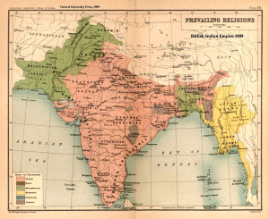
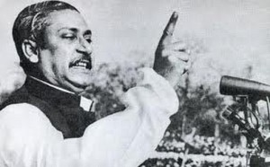
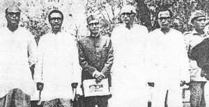
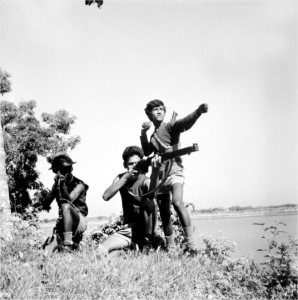
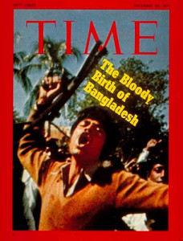

After the demise of British Empire in 1947, Bengal was partitioned as a province of West Pakistan with being renamed as East Pakistan. Dhaka was declared as its capital. Despite of adequate resources and demographic weight of East Pakistan, the entire Pakistan’s government and military was largely dominated by the upper classes from the west.
The government of Pakistan — dominated largely by the west — declared Urdu as the only official language of the entire Pakistan which triggered a massive dissatisfaction among the people of the east. On 21 February, 1952, Bengali students in East Pakistan rose up for the mother tongue and protested against this decision. As police open fired to their possession, several students died for defending their language. The glorified sacrifice of these martyrs is now observed not only in Bangladesh but also all over the world as International Mother Language Day.
Displeasure on the west in the issues of economic and cultural domination resulted into the emergence of Awami League as the strongest political voice of East Pakistan. In his historic speech before hundred thousands of people at the Suhrawardy Udyan on March 7, 1971, the president of Awami League and the father of the nation Bangabandhu Sheikh Mujibur Rahman, called upon all the people of East Pakistan to launch a decisive struggle against the Pakistani occupation and take a all-out preparation for the War of Liberation.
After a lot political unrest and provincial discrimination, Bangladesh Liberation War (Bengali: Muktijuddho) was commenced after Bangabandhu Sheikh Mujibur Rahman declared Bangladesh’s independence just before getting arrested in the early hours of 26 March 1971 by Pakistani military. President Yahya Khan and his military officials launched extremely bloody measurement called Operation Searchlight on the innocent civilians of Bangladesh.
The exile government, formed by Awami League leaders, formally took oath at Meherpur, in the Kustia district of Bangladesh, on 17 April 1971, with Tajuddin Ahmad as the first Prime Minister and Syed Nazrul Islam as the Acting President.
A resistance force known as the Mukti Bahini (Freedom Fighter) was formed from the Bangladesh Forces (consisting of Bengali regular forces) in alliance with civilian fighters. Led by General M. A. G. Osmani, the Bangladesh Forces were organized into eleven sectors and, as part of Mukti Bahini, conducted a massive guerrilla war against the Pakistan Forces. During this war, the whole world witnessed the 1971 Bangladesh genocide, in which the Pakistan Army and its allied religious militias carried out a wide-scale elimination of Bengali civilians, intellectuals, youth, students, politicians, activists and religious minorities.

Amidst the sacrifice of countless Bangladeshi souls, Pakistani Army finally surrendered to the Bangladesh-India Allied Forces on 16 December 1971. The nine month long Bangladesh’s Liberation War was won on that day. And Bangladesh, with a lot of promise and hopes, starts its glorious journey.
